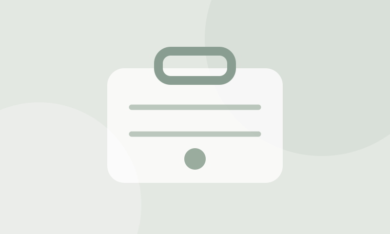
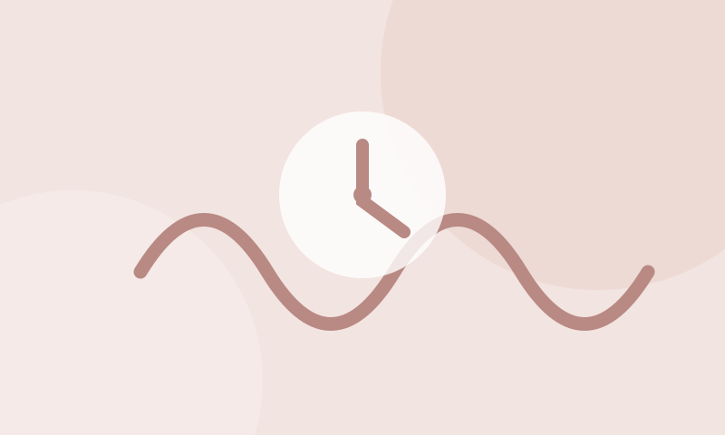

LIFE / FAMILY / SERIES 01
Becoming
Parents.
初为父母。
从临产准备到宝宝出生后的第一个月，一份给全家人的实用手册。
本系列为通用健康教育内容，不替代产科或儿科诊疗。各医院的入院标准、用品要求及个体风险不同，请以你的产检医生和就诊医院指导为准。出现紧急症状时立即就医。

CHAPTER 01产前准备 ↗

CHAPTER 02临产征兆 ↗

CHAPTER 03待产包 ↗

CHAPTER 04分娩过程 ↗

CHAPTER 05产后恢复 ↗

CHAPTER 06新生儿护理 ↗
THE GUIDE / 06 CHAPTERS
01产前准备↗02临产征兆↗03待产包↗04分娩过程↗05产后恢复↗06新生儿护理↗